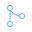

Frame runs a complete automated pipeline — research, persona, naming, visual direction, image generation, frontend engineering, SEO, security, deployment. One command starts the sequence.
Finds today's highest-scoring topic across six categories. Scores visual potential, search momentum, and category freshness.
Writes every cinematic prompt and creates every SVG asset. Determines the entire visual world before a single line of code is written.
Sends precise prompts to Higgsfield — 2K stills, start frame and end frame. Cinematically accurate to the subject.
Animates the cinematic sequence. Orbital and descent presets selected by subject. Duration: six seconds. No manual review.
Writes a single self-contained index.html with all eight cinematic effects — scroll-driven video, cursor dissolve, mask reveals, film grain.
Creates the GitHub repository, commits all assets, and triggers Vercel. From zero to live in under eight minutes.
Each build is a complete cinematic world — researched, named, shot, coded, and deployed by the pipeline. No templates. No repetition.
Every capability runs in the correct order. Nothing is skipped. Nothing is approximated.

Frame runs daily at 12:00 Ankara time. Each build produces a complete, deployable cinematic website. The pipeline has no off switch.
Start a buildSend a subject. Frame does the rest.